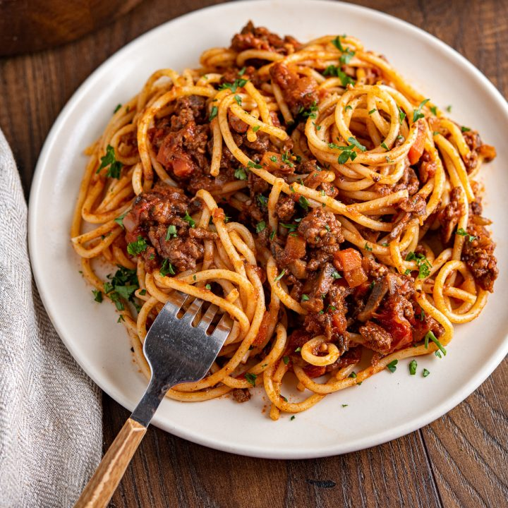

Spaghetti Bolognese

Description
Spaghetti Bolognese, a beloved Italian-inspired dish, is the epitome of comfort food that never goes out of style. This hearty pasta creation combines perfectly al dente spaghetti with a rich, savory Bolognese sauce that's been simmered to perfection. The sauce, a tantalizing medley of ground meat, usually beef or a blend of meats, sautéed onions, garlic, aromatic herbs, and a harmonious tomato base, is a flavor explosion that clings to the pasta, ensuring every bite is a delicious experience. Topped with a generous sprinkle of grated Parmesan cheese and fresh basil, this dish captures the essence of Italian cuisine and is a crowd-pleaser for families and foodies alike. Spaghetti Bolognese is not just a meal; it's a culinary journey to Italy, right in the comfort of your own kitchen.
Ingredients
- Spaghetti - 12 ounces
- Ground beef - 1 pound
- Onion, finely chopped - 1 medium
- Garlic cloves, minced - 2 cloves
- Canned crushed tomatoes - 28 ounces
- Tomato paste - 2 tablespoons
- Olive oil - 2 tablespoons
- Dried oregano - 1 teaspoon
- Dried basil - 1 teaspoon
- Red pepper flakes - 1/2 teaspoon (optional, for heat)
- Salt - 1 teaspoon (or to taste)
- Black pepper - 1/2 teaspoon (or to taste)
- Fresh basil leaves, for garnish
- Grated Parmesan cheese, for serving
Instructions
- Boil a large pot of salted water.
- Add 12 ounces of spaghetti to the boiling water.
- Cook the spaghetti until al dente according to the package instructions.
- Drain the pasta and set it aside.
- Prepare the Bolognese sauce:
- In a large skillet, heat 2 tablespoons of olive oil over medium heat.
- Add 1 medium chopped onion and sauté until translucent (about 3-5 minutes).
- Stir in 2 cloves of minced garlic and cook for an additional 1-2 minutes.
- Add 1 pound of ground beef (or a mix of beef and pork) and cook until browned.
- Combine 28 ounces of canned crushed tomatoes, 2 tablespoons of tomato paste, 1 teaspoon of dried oregano, 1 teaspoon of dried basil, 1/2 teaspoon of red pepper flakes (optional), 1 teaspoon of salt, and 1/2 teaspoon of black pepper into the skillet.
- Simmer the sauce for 20-25 minutes, stirring occasionally.
- Combine the cooked spaghetti with the Bolognese sauce, tossing until well coated.
- Serve the spaghetti Bolognese hot, garnished with fresh basil leaves or parsley, and offer grated Parmesan cheese for serving.
- Enjoy your homemade spaghetti Bolognese!